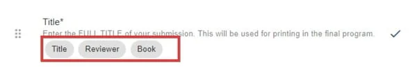
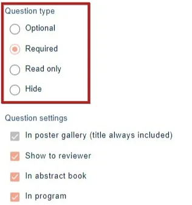
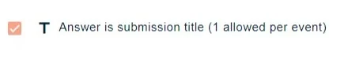
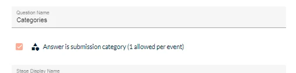
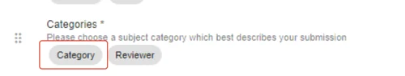

Question setting tags
For event organisersNot an organiser?
Various tags can be applied to your questions to determine how responses will be treated and viewed within the system.#
Go to Event dashboard → Abstract Management → Submissions → Form & Setup
You can apply 'tags' to each question. These will vary according to the type of question and setup you have. In the example below, you can see that the Title question has three tags - Title Reviewer and Book. This signifies that the response to this question:
a) will be treated as the title to the abstract throughout the system.
b) will be shown to the reviewer
c) will appear in the abstract book

Click on any question to see the tags.
Scrolling to the bottom of the question will reveal the following.
For the section marked red, see Display settings
This article deals with the lower half of the section.

NB: Tags will vary according to which question you are editing, and which package you have. In the example above, the Professional Conference package has been used.
In poster gallery - To include the response in the poster gallery
Show to reviewer Responses to this question will be shown to the reviewers.
In abstract book Responses to this question will be shown in the abstract book.
In program Responses will appear in the program, with the submission
Title tag
This option wll only appear in the text questions.
If this is ticked, responses to this question will be treated as the title of the abstract throughout the system. Only one question can have the title tag.

Category
This option will only appear in dropdown questioms - if this is ticked, responses to this question will be treated as the Category.

NB: Only one Category question is permitted in the submission form.

The question with the Category tag can be used to assign abstracts to reviewers based on the category that the submitter chose. Is also automatically prepopulates the Final category question in the decisions phase.

Didn't solve it? Ask our support team
No question is too small, and there's no charge for asking. Raise a ticket and someone who knows the software will pick it up.
Did this page solve it?
Thanks — this helps us fix it.